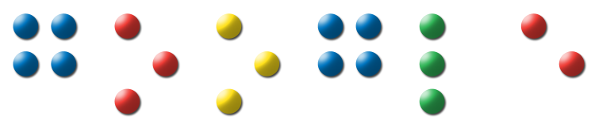

Overview
- Introduction
- User interaction model for IM chat in Gmail
- Injecting ARIA
- Talking Translation Bot
- Q & A
Introduction
-
Web 1.0
- Web pages are static documents
- Interaction limited to simple form
controls
-
Web 2.0
- Web pages are dynamic
- Interaction with custom complex
widgets
WAI-ARIA
- AT need to ask the browser what an element is
- Browsers need to identify that element and its
associated properties in a meaningful way
-
ARIA
provides this
- Map leaf level widgets to their equivalents
in traditional desktop applications
- When there is an update, give the AT some
hints about what should be spoken
- DOM + JS: assembly language of the
web
- ARIA adds a few special operators
WAI-ARIA
-
Roles (with related properties)
- "slider" role for DIVs that have JavaScript
+ CSS which act as sliders
- AT will see these DIVs as slider widgets in
a desktop app
-
Live Regions
- Regions with dynamic content
- Hint for how updates to these regions
should be processed
User interaction model for IM chat in Gmail
-
Common contact list used for e-mail and instant messaging
-
Chat can be initiated from a single shortcut key
-
Display updates when new chat messages are sent/received
-
AT should speak these display updates
Injecting ARIA
-
AxsJAX
- Web applications are more than the sum of their leaf level widgets
- Application specific higher level logic for a smooth user experience
- JavaScript framework for injecting accessibility enhancements in existing Web 2.0 applications
-
Enhancements for Gmail IM
- Added
aria-live="rude"
- Gives the new message the highest priority
- Uses Google Translate
- Add a translation bot into your contact list (en2zh@bot.talk.google.com)
- When you send the bot a message, the bot echoes the translated message back.
Talking Translation Bot
- A translation bot that chats on IM +
ARIA markup that makes the AT speak chat messages +
an AT that supports multiple languages
=
a Talking Translation Bot